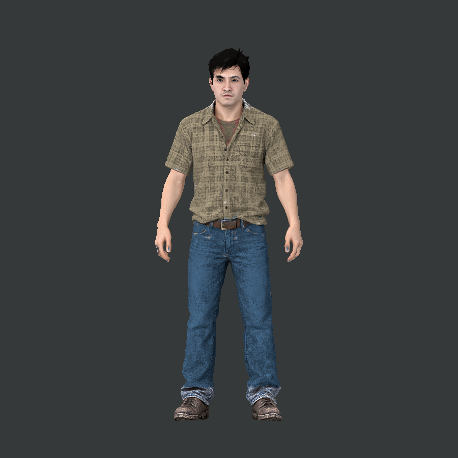
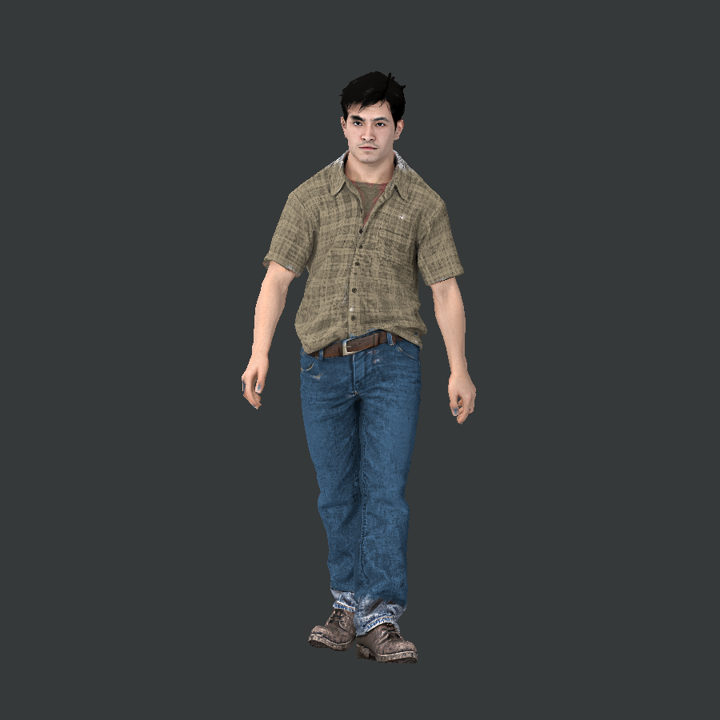
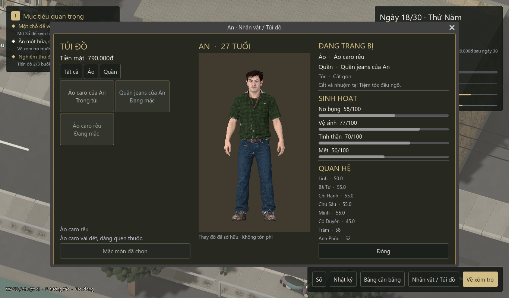

Vật liệu da/vải đã giảm bóng, rig 24 xương, đứng nghỉ và đi bộ. Mua quần áo ở Chợ Cầu Nhỏ, thay đồ trong Nhân vật / Túi đồ; cắt và nhuộm tóc có phí tại Tiệm tóc đầu ngõ. Lưu cùng ván chơi.
GLB có rig và clip đi bộ · Nguồn và chi phí
Vật liệu tùy chỉnh và clip đứng nghỉ được áp dụng bằng script trong Godot, không nằm trong GLB thô.


